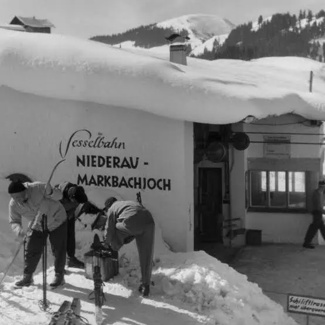
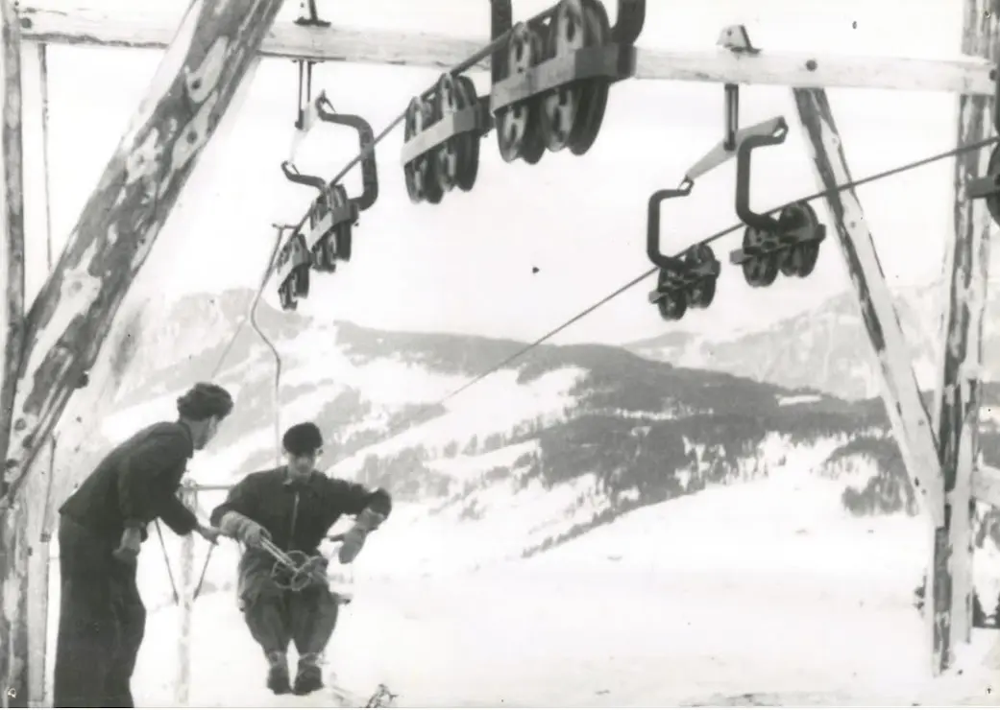
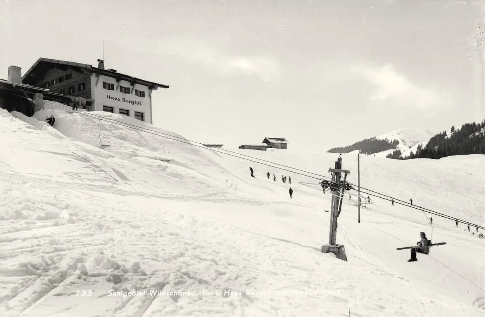
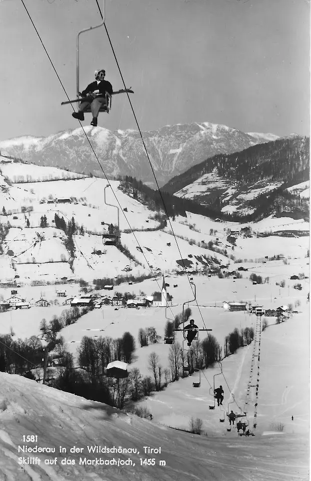
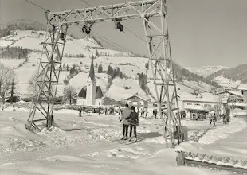
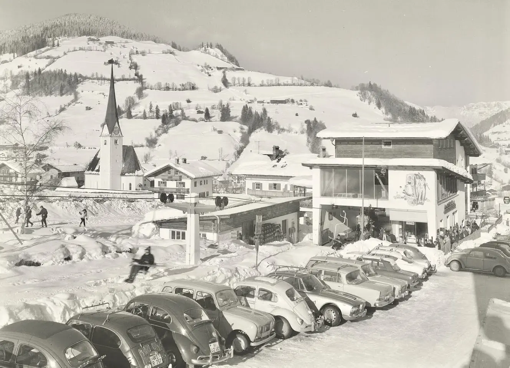
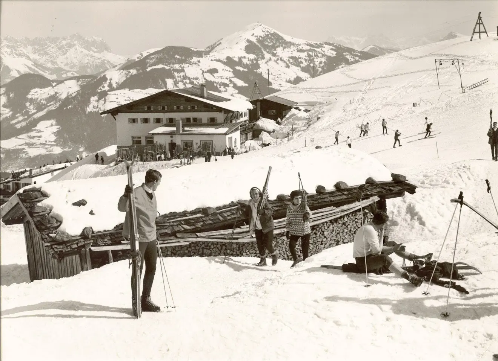

Rübezahl-Hütte
Panoramaberggasthof met een groot zonneterras, vlak bij het bergstation. Je bereikt hem met de gondel. Op zondag is er volgens de toeristische bronnen vaak live volksmuziek.
Bergbaan van Niederau
Vanuit het dorp zie je hem al: het Markbachjoch, de berg waar in 1947 de eerste stoeltjeslift van Tirol naartoe ging. Tot vandaag is hij het uithangbord van Niederau, in de winter voor skiërs en in de zomer voor wandelaars, gezinnen en paragliders.
Liften
De Markbachjochbahn vertrekt aan de rand van Niederau en brengt je in ongeveer zes minuten naar het Markbachjoch. Het is een gondelbaan met cabines voor acht personen, gebouwd door Doppelmayr in 1995. Volgens de gegevens van skiresort.info kan de baan ongeveer 1.200 personen per uur vervoeren.
Boven sluit het skigebied aan op het lift- en pistenetwerk van Ski Juwel Alpbachtal Wildschönau. Aan de overkant van het dorp ligt het Lanerköpfl, het tweede, wat rustigere deel van het skigebied van Niederau. Rond het bergstation is volgens skiresort.info een overdekte loopband voor skiërs aangekondigd; check de actuele stand bij de Wildschönauer Bergbahnen.

Hutten & restaurants
Rond het Markbachjoch liggen meerdere plekken om te pauzeren. Openingstijden verschillen per seizoen; bel of kijk op de website voordat je erheen gaat.
Panoramaberggasthof met een groot zonneterras, vlak bij het bergstation. Je bereikt hem met de gondel. Op zondag is er volgens de toeristische bronnen vaak live volksmuziek.
Alm bij het Markbachjoch die goed bij gezinnen past: er zijn een speeltuin en een kleine dierenweide, en bij mooi weer hangmatten om even uit te rusten.
Snackbar aan het dalstation van de Markbachjochbahn: handig voor een hapje of een drankje voor of na de rit, zeker na een dag op de piste.
Gezellige alm op ongeveer 1.360 meter, circa een half uur lopen vanaf het bergstation. Er zijn Tiroler gerechten en zelfgemaakte taart. Ook rond het Lanerköpfl, bijvoorbeeld bij de Holzalm, kun je goed pauzeren.
Geschiedenis
Het begon na de oorlog. In 1946 startte ingenieur Sepp Hochmuth, een opgeleid machinebankwerker, met de bouw van een stoeltjeslift van Niederau naar het Markbachjoch. Het was een echte zelfbouw: voor de zitjes gebruikte men volgens de overlevering dunne houten planken, draden en waterleidingbuizen, en een oude tankmotor leverde de aandrijving.
Op 14 januari 1947 ging de lift open. Daarmee kreeg het dal zijn eerste bergbaan en begon het wintertoerisme in de Wildschönau. Wie vandaag in de gondel stapt, volgt dus nog steeds de lijn van die eerste lift.







Oude foto’s en ansichtkaarten uit de Facebookgroep ‘Kufstein in alten Bildern’.
Zomer & winter

Brede, zonnige pistes boven het dorp, geschikt voor beginners, gezinnen en wie rustig wil skiën. Terug naar Niederau kan op de piste. Op de noordhellingen vind je pittiger afdalingen, zoals de Hochberg-afdaling. Voor de allerkleinsten zijn er oefenweides bij het dorp; vraag naar de actuele situatie van de oefenlift.

Met de gondel sla je de klim over en begin je meteen op de bergweiden. Populaire routes lopen naar de Rosskopf via de Halsgatterl of naar de Feldalphorn, en er is een rustiger pad langs de bosrand naar Penningdörfl met uitzicht tot de Hohe Salve en de Wilder Kaiser. Het Markbachjoch is ook een bekende startplaats voor paragliders; de startplek ligt onder de hut. Gezinnen vinden bij de alm een speeltuin en dieren.
Vragen
De achtpersoons gondel van Niederau naar het Markbachjoch doet er ongeveer zes minuten over. De oude stoeltjeslift had er rond de achttien minuten voor nodig.
Ja. De gondel rijdt ook in het zomerseizoen en brengt wandelaars, gezinnen en paraglidepiloten naar boven. Begin en einde van het seizoen en de dagelijkse tijden wisselen per jaar; kijk bij de Wildschönauer Bergbahnen voor de actuele tijden.
Vlak bij het bergstation vind je de Rübezahl-Hütte en de Markbachjochalm; bij het dalstation staat de Schnapshütte. Iets verder lopend ligt de Norderbergalm. Openingstijden wisselen per seizoen, dus controleer ze vooraf.
Hier opende op 14 januari 1947 de eerste stoeltjeslift van Tirol, gebouwd door ingenieur Sepp Hochmuth. In 1995 kwam er een gondelbaan voor acht personen voor in de plaats.
Let op: tijden, prijzen en seizoensdata veranderen. Controleer ze altijd bij de Wildschönauer Bergbahnen en bij de hutten zelf. Bronnen voor de geschiedenis en techniek: Wildschönau Tourismus, skiresort.info en de website van Ski Juwel.